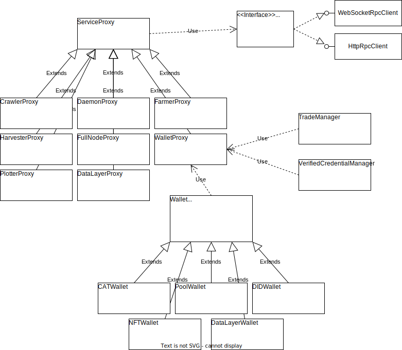

chia-dotnet
Cross-platform .Net Core rpc client library for chia.
Browse the api documentation and integration test code for more info and examples.
Quick Start Examples
Connect to the Node and find out about the blockchain
var endpoint = Config.Open().GetEndpoint("daemon");
using var rpcClient = new WebSocketRpcClient(endpoint);
await rpcClient.Connect();
var daemon = new DaemonProxy(rpcClient, "unit_tests");
await daemon.RegisterService();
var fullNode = new FullNodeProxy(rpcClient, "unit_tests");
var state = await fullNode.GetBlockchainState();
Console.WriteLine($"This node is synced: {state.Sync.Synced}");
Send me some chia
var endpoint = Config.Open().GetEndpoint("wallet");
using var rpcClient = new HttpRpcClient(endpoint);
var wallet = new WalletProxy(rpcClient, "unit_tests");
await wallet.WaitForSync();
// walletId of 1 is the main XCH wallet
var standardWallet = new Wallet(1, wallet);
// this is my receive address. feel free to run this code on mainnet as often as you like :-)
var transaction = await standardWallet.SendTransaction("xch1ls2w9l2tksmp8u3a8xewhn86na3fjhxq79gnsccxr0v3rpa5ejcsuugha7", 1, 1);
Listen for events
using chia.dotnet;
var endpoint = Config.Open().GetEndpoint("daemon");
using var rpcClient = new WebSocketRpcClient(endpoint);
await rpcClient.Connect();
var daemon = new DaemonProxy(rpcClient, "eventing_testharness");
// this listens for the messages sent to the ui
await daemon.RegisterService("wallet_ui");
daemon.StateChanged += (sender, data) => Console.WriteLine($"daemon state change: {data}");
var farmer = daemon.CreateProxyFrom<FarmerProxy>();
farmer.ConnectionAdded += (sender, data) => Console.WriteLine($"Connection added: {data}");
farmer.NewFarmingInfo += (sender, data) => Console.WriteLine($"Farming info: {data}");
farmer.NewSignagePoint += (sender, data) => Console.WriteLine($"Signage point: {data}");
while (true)
{
await Task.Delay(100);
}
Main Types and Relationships
The Wallet service API is segmented into classes for specific wallet types and a trade maanger for trades and offers.
